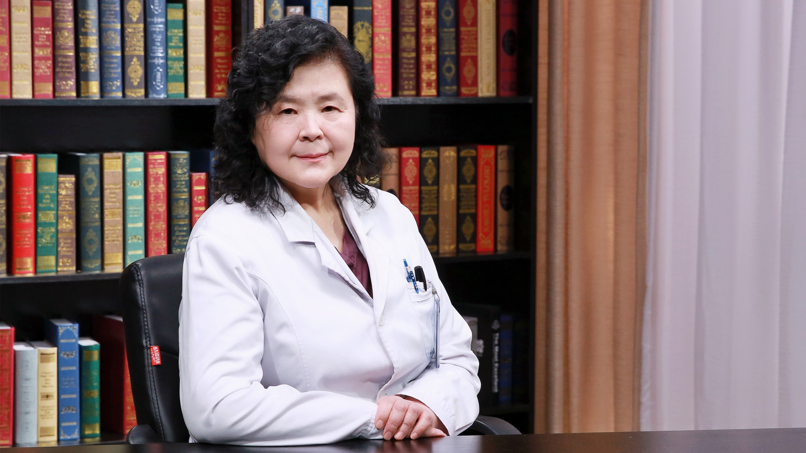

1.101 优生遗传咨询¶
王树玉 主任医师¶

首都医科大学附属北京妇产医院生殖医学科 总负责人 主任医师 博士生导师；
北京市重点学科带头人 享受国务院政府津贴；中国医师协会生殖医学专业委员会副主任委员；中国优生科学协会常务委员兼学术部副主任；中国出生缺陷预防专业委员会副主任委员；中国遗传学会委员；中华医学会遗传分会委员。
主要成就： 北京妇产医院生殖医学科创史人，诞生北京市级医院首例试管婴儿；作为卫生部重点课题首席，牵头全国55家产前诊断中心，首次进行国产FISH探针产前诊断临床应用；承担国家科技进步奖、华夏医学奖、国家人类辅助生育技术和人类精子库等评审专家；获中国卫生医药事业基金会杰出研究奖、中国妇幼卫生科技成果奖三项等。
专业特长： 擅长优生遗传咨询、遗传病诊断及产前诊断、疑难病例会诊异常报告鉴定；不孕不育症诊治、各种助孕技术及内分泌异常诊治。
高龄女性怀孕生子有什么风险？一般多大年龄怀孕比较合适？¶
（采访）高龄女性怀孕生子会有什么风险吗？
高龄，指35以上妊娠。
高龄妇女和年轻妇女相比，她的生育还是有一定的危害和风险的。
高龄妇女的不孕症，发病率增高，不太容易怀孕，因为高龄女性的卵子开始老化，生育环境也发生改变了，比如说子宫肌瘤、输卵管疾病，这些原因都可以导致高龄不孕症发生率增高。
高龄也会导致流产率增高。因为卵子老化，染色体分裂会出现问题，比较严重的染色体病会产生流产。另外一个是自身的原因，比如说内分泌的原因，也会导致流产。
高龄妇女生出畸形儿的风险比年轻女性高。
因此35岁以上的高龄产妇，要进行产前诊断。
（采访）也就是说高龄女性怀孕生子，可能主要有三方面的问题：第一方面就是她由于卵巢老化，她可能没有那么容易怀孕。第二方面就是即使怀孕了之后，在孕中流产的风险会比较高。再一方面就是说即使生下来之后，胎儿畸形的风险也会比较高。
对，总结就是“三高”。不孕率增高、流产率增高、出生缺陷率增高。
（采访）您认为一般女性多大年龄生育是比较合适的？
多大生育比较合适，没有给一个具体的定论。当她的生殖器官发育成熟，就可以生育了。
一般的情况在24-28岁之间，这个时候怀孕是比较好的。这时候的卵巢功能相对比较好，一般的情况也是比较好的。
但是有好多人由于工作、学习的压力，推迟生育。推迟生育的话，要做好准备，尽量去早生育。
二胎政策放宽了以后，35岁以上女性生育的特别多，也并不是说，这时候就一定生不好的孩子。建议她们要在孕前、产前，及时的进行检查，在医学的帮助下，也是可以生出健康的孩子。
（采访）如果是一名女性，她可能现在比较年轻，但是她打算等35岁之后再去生孩子的话，她需不需要现在就先做一个检查呢？
这个时候先做检查没有太大的意义，因为她35岁的情况和现在的情况完全是不一样的。
如果她打算以后生孩子，就需要定期的去查内分泌，看一看她的卵巢功能。如果有一些不好情况的时候，还是建议尽早生育。
因为我们国家一些伦理和管理的要求，现在还没有发展到能把卵母细胞冷冻上，等到以后再生的时候，再去解冻。因此还是建议她及早的去生育。
有心脏病、糖尿病、高血压的女性，应如何备孕及怀孕？¶
（采访）如果是有糖尿病、高血压、心脏病的女性，她要如何去备孕呢？
要具体情况具体分析，要看疾病性质和疾病程度。
首先高血压、心脏病、糖尿病，它们都属于内科疾病，怀孕前要在内科去进行检查和诊断。
在妊娠期的时候，不应该是患病期，应该是平稳期，由内科大夫评估她现在的情况，适合不适合怀孕，怀孕以后能不能承担整个妊娠全过程的风险。
在怀孕期的时候，还应该跟内科大夫进行沟通，应该来到医院，在健康的指导下怀孕。
这三种疾病应该还是可以怀孕的。
（采访）我们也知道糖尿病、高血压，可能是需要长期服药的，在怀孕期间需要停药吗？
一般的糖尿病服用二甲双胍，在怀孕期间是可以服的。降血压的药物，应该内科选择。
孕期的时候有一些药物可以在医生的指导下服用，不要断药。
有过自然流产史的女性，应如何顺利怀孕生子？¶
（采访）如果是有过自然流产史的女性，那她要如何顺利的怀孕生子呢？
自然流产是指非人工的情况下的流产，比如说有孕早期和孕中期的一个流产史，还是要看她的具体情况。
一般有过流产史的，我建议一个是流产后去做检查，一个是在孕前去做检查，要看她流产的原因是什么，有些原因是不清楚的。要看她的综合因素，尤其是两次以上的流产，有遗传的因素。
比如说夫妇一方是染色体平衡易位携带，表现都是正常的。产生后代的时候就极容易流产，这个时候要给她进行指导，还要进行产前诊断。
还有其他的因素，比如说内分泌的原因，像多囊卵巢综合征，内分泌不好，一个是不容易怀孕，一个是怀孕容易流产。
比如说高泌乳素血症，还有一些甲状腺功能异常，这些应该是在怀孕前就控制的。
还有一些是子宫内部的因素，比如说子宫内膜有息肉，子宫环境不好，这都应该做一些检查。
另外还应该有免疫、生物的因素，因此流产以后应该到医院做检查，把相应的因素都去掉。
另外还有环境的因素，她的工作情况，她的接触史，这些都是具体的去分析。
她再次怀孕的时候，避免这些不良因素，但不是完全说避免了以后，下一次就一定不流产了。
好多流产的原因还是不清楚的，只能说尽量去减少流产的可能性。
人工流产或药物流产对以后的生育有什么危害？¶
（采访）如果是有过人工流产或者是药物流产的女性，会对以后的生育有什么危害吗？
人工流产和药物流产，对今后的危害，有两点：
第一，再怀孕的时候不太容易了，比如说损伤了内膜，或者导致输卵管阻塞了，可能就不太容易怀孕了。
第二，再次怀孕的时候，可能还容易造成流产。因为有时候伤及内膜，很容易造成习惯性的流产，这叫反复流产。
因此还是建议计划妊娠，尽量避免人工流产。
但是做过人工流产和药物流产的妇女，不见得不能生。比如说有些产生不孕的原因，可以用辅助生殖的技术进行帮助。
有过宫外孕的女性，还能顺利怀孕吗？¶
（采访）如果是有过宫外孕的女性，她如果想再次怀孕的话，需要注意些什么呢？
宫外孕发生了以后，应该到医院做检查。首先要看她宫外孕的部位在哪，检查一下宫外孕的原因。
有些宫外孕是子宫内膜的情况不好，着床在宫外了。
有些是由于输卵管的因素，比如说输卵管通而不畅，不能使受精卵如期的达到宫腔，产生了宫外孕。
一般要注意，左侧宫外孕以后，右侧输卵管是否通畅，右侧输卵管通畅了，再次怀孕的时候，用B超监测右侧排卵，再建议去同房。
如果双侧输卵管都阻塞的话，还可以进行试管婴儿，就是不用输卵管了。
总之有过宫外孕的，一定要到医院去检查。
（采访）有过宫外孕的女性，会不会再次怀孕的时候，还是宫外孕呢？
很有可能，因为宫外孕，一个是输卵管结构发生变化，比如说输卵管阻塞、通而不畅。
还有一种可能是输卵管功能的问题，比如说输卵管是通畅的，但是输卵管的运输功能有问题。
比如说它靠纤毛运动异常，这个时候再次发生宫外孕，是有风险的。
但不是一定发生，因为任何一个人的任何一次怀孕都有可能是宫外孕。
有过流产、胎停育或畸形儿等不良孕产史的女性，如何顺利怀孕生下健康宝宝？¶
（采访）主任，如果是有过不良孕产史的女性，她再次怀孕需要注意些什么吗？
不良孕史是指怀孕的时候有过流产、胎停育的情况。
不良产史是指孩子出生有问题，有畸形儿这样的，针对她的情况，对这一对夫妇进行检查。
比如说要查一下相关遗传因素的时候，目前只查到夫妇的染色体，现在随着分子生物学的急速发展，必要的时候，可以进行一个相对的基因检测。
假如在怀孕的时候胎停育，给这个患儿做了一个相应的检查。
对照这个患儿的检查，觉得患儿跟遗传因素有关系的时候，可能会查到父母，这是一个相应的检查。
针对女方的检查特别多，要给她查内分泌，看一看内分泌的基本情况。
还要查一些生物的因素，就是容易造成胎停育的一些不良影响。
有一些病毒，可能要给她查甲状腺功能，做一个相应的子宫检查、生殖器官检查。还要评估她的全身状况、营养状况。
再次怀孕的时候，要有一个孕前的指导。比如说让她吃叶酸、吃维生素，在一个比较好的监测排卵的情况下再次怀孕。
怀孕的时候，针对她的情况进行保胎，这样对她下一胎怀孕会有好处。
（采访）如果是有不良孕产史的女性，她已经怀孕了怎么办呢？
如果已经怀孕的话，建议她到专门的门诊。把上一次或者是前几次的检查结果都带来，让医生去评估。
看看有没有针对这一胎进行检查的情况，也是可以做到的。
但是最好是在孕前做，但是像你说的这个特别多见，就是她再次怀孕才找医生，这样的话，也可以针对上一胎，去进行这一胎的分析。
还要做必要的检查。除了常规的检查以外，针对她第一胎的时候，给她进行必要的检查。
“近亲结婚”的危害到底有多大？¶
（采访）现在我们国家其实是近亲禁止结婚的，为什么会这样呢？
近亲指的是直系的血缘，也指旁系三代以内的。如果这一对准夫妇，共同用了一个祖父母或者外祖父母，这被称为近亲，是禁止结婚的。
但是有些人不说，他们就去结婚了，结婚以后过来做检查，近亲结婚有什么危害呢？
近亲结婚主要是后代的一个问题。
因为遗传病的划分，有单基因遗传病，多基因遗传病和染色体病。近亲结婚对单基因遗传病，它的发病率就可以增高。
比如有一种单基因遗传病叫常染色体隐性遗传病。如果两个人是非近亲，有一个人携带，第二个人携带的可能性不大。
但是如果是近亲，就很可能共同携带了一个隐性的致病基因，要是和其他的群体人结婚，他的后代是正常的。
要是近亲结婚就可能生育不正常的后代。比如说隐性遗传病，像白化病。
如果家族都是正常的，然后近亲结婚了，有可能就会生育这样的后代。
还有一类是多基因遗传病，近亲结婚也是发病率增高，因此我们国家的婚姻法，是要禁止近亲结婚，在婚姻法里是有规定的。
临床上其实见了好多，结婚了以后来医院了，说你给我检查检查，看看有没有疾病发生。
但是如果他们结婚了，其实没有方面去检查，因为不能猜测这个家族携带了什么基因，那么怎么办呢？
只能生育后代去看，假如生育了一个不好的后代，才能预估下一胎怎么去尽量的避免，检测和预防。
如果光是近亲结婚，确实也查不出来。
好多人近亲结婚，来了以后到医院查，说查一下夫妇染色体，染色体正常跟近亲结婚没有关系，所以不能预示着他的后代正常。
因此还是建议不要近亲结婚。
（采访）如果是近亲结婚了，他们生出的孩子是痴呆儿，或者是胎儿死亡，或者胎儿畸形的几率会有多大呢？
不同的疾病，有不同的几率。
一个痴呆儿，那是一个智力低下，智力低下看什么原因引起的。
引起智力低下的原因有很多，染色体异常、基因病异常、环境因素，所以不能单纯的指一个疾病。
只能说近亲结婚，比两个正常的非近亲结婚，生育后代的不正常的几率会增高。
但是几率增高，不是说一定就生育了一个不正常的后代，这个是不肯定的。
但是还是建议亲缘关系越远越好，从做动物试验来看，如果把小鼠近亲繁殖的时候，繁殖到第三代，基本上就是不育了，繁殖不出来了。
我最早的时候，在山东做遗传病调查，走到山东特别偏远的农村去了，都是山里边。
那个年代对外交通还不发达，所以只能是自己村和村之间去结婚，都是近亲关系。
这里边智力低下的确实特别多见，车刚一停下来，我印象中拍手欢迎的，好多是智力低下的。
所以近亲结婚，可能显示在我说的小鼠试验，三代以后就可能会有明显问题了。
但是一般指近亲结婚的危害，还是指这对夫妇他们自己生育孩子的这种情况下。
为什么有的孩子像爸爸，有的孩子像妈妈？¶
（采访）为什么说有的孩子生出来会比较像爸爸，而有的孩子生出来会比较像妈妈呢？
你说的这个现象是一个遗传现象，子代和亲代，外形、功能、性格，他们相像的这个现象，就叫做遗传。
这个遗传还是根据一个遗传基因去传给的，但是至于说为什么像爸爸，为什么像妈妈这个现象，我觉得在外貌上，有些基因是显性的，有些基因是隐性的。
传给后代的表型特征的话，一定是显性基因在表现，所以就传给后代了。
（采访）现在有没有说到底是哪个基因决定的，到底是像爸爸，还是像妈妈？
不知道，这样的基因成千上万、上亿去决定，也就是茫茫大海里边，沧海一粟是找不到的。
很难说某个基因像爸爸、某个基因像妈妈，而且你像，是指的哪一点像。
比如说是大眼睛、还是双眼皮，我看了好多报道说大眼睛、双眼皮是显性基因，还有人说小眼睛是显性基因，确实我们这个很难去确定。
一般的来讲夫妻俩有一个是大眼睛、双眼皮，有一个是小眼睛单眼皮。她的后代可以是大眼睛、双眼皮，也可以是小眼睛、单眼皮，只能说不好说，因为它是很多因素决定的。
当然还有一种可能，不像爸爸，也不像妈妈，他的外貌的某一种是基因突变也可以，这是一个现象。
如果这个现象没有跟疾病挂钩的话，做的相对研究，医学研究就不多，医学遗传学，重点还是跟疾病相关的比较多，外貌做的不多。
除非是有问题的外貌遗传，它还是某种基因去决定的。
比如说有一种病就是脆X综合征，脆X综合征是X染色体，它的长臂有一点是断裂的。
这一点断裂决定了CCG的一个重复序列，重复序列增高的时候，就产生了他的表型特征了。
比如说他的大耳朵、大睾丸，是这样的一个表现。
这个基因可以在某个器官里边去发生作用，比如说在睾丸器官，卵巢器官，可以导致女性的一个卵巢功能的不行。
因此只能说某种疾病的基因，决定了哪些形状和哪些器官，单纯指外貌的时候，确实就很难去分说。
“遗传病”与“先天性疾病”是一回事吗？后天环境会导致遗传病吗？¶
（采访）这个遗传病就是先天性疾病吗？
遗传病和先天性疾病是两个概念。
遗传病的概念是由遗传因素所引起的疾病，叫做遗传病。
先天性疾病是这个婴儿在出生时，就表现出来这个疾病的这种状态，叫先天性疾病。
大部分遗传病出生的时候就表现了，所以这些遗传病也叫先天性疾病。
但是有些遗传病确实是出生的时候不表现，后天的时候再表现，但是它是遗传因素引起的，也叫遗传病。
比如说白化病，他出生的时候，这个孩子头发是白的，眉毛是白的，是一个常染色体的隐性遗传病，也是先天性疾病。
再比如说慢性进行性舞蹈病，也叫亨廷氏舞蹈病，他出生的时候是正常的，他可以20多岁、30多岁，甚至40多岁以后发病。
它是一个后天性疾病，不是先天性疾病，但是也是遗传病。
所以说遗传病不等于先天性疾病，但是大部分遗传病，属于先天性疾病。
（采访）后天环境会不会引发遗传病呢？
后天环境只能说诱导一定的遗传病，那是指的多基因遗传病。
多基因遗传病，它是环境因素和遗传因素共同作用的结果。
比如说精神分裂症，它是属于多基因遗传病，这个多基因遗传病是情感性的，因此他是15岁之前不发病，15岁以后有了情感才发病。
但是有一定的环境因素作用，比如有的人选班干部，没有选上，他不高兴了，他一定要精神受到打击以后才产生，它是遗传病，但是跟环境因素有关。
还有一些基因决定了肿瘤，但是环境给他造成了一定的加速，所以就诱发了原发病。
所以环境因素可以促发一定的，但是如果是没有这个致病基因，只是环境因素影响，遗传病是不发生的。
家族中没有遗传病，就不会生出有遗传病的孩子吗？¶
（采访）是不是只要家族中没有遗传病，就肯定不会生出有遗传病的孩子呢？
这个也不对。
比如说常染色体的隐性遗传病，这两个家族都不会有问题，但是夫妇俩都携带了一个致病基因，他的后代就是1/4发病。
这样的话，双方家里头祖祖辈辈没有发病，所以好多人认为遗传病就是家族性的，我们家里头没有，就不是遗传病。
实际上隐性遗传病都是散发的，所谓的散发就是家族中只有一个患者，这叫散发的病例。
所以遗传病不一定是家族性的，散发的不一定不是遗传病，但是有些家族性的疾病，不是遗传病，比如说它可以是传染病。
好比说肝炎、甲型肝炎，它是肠道传染，大家在餐饮上没有分开，就可以互相得。
这个是一个家庭都得了，但它绝对不是一个遗传，它是一个传染。
常见的遗传病有哪些？分为哪些类型？¶
（采访）常见的遗传病都有哪些呢？它们都分为哪些类型呢？
常见的遗传病，一般的我们可以说分三类。
染色体病、单基因遗传病、多基因遗传病，现在比较多见的可能还有线粒体病、体细胞遗传病等等。
最多见的还是指的单基因遗传病，多基因遗传病和染色体病。
染色体病是染色体的形态和结构异常所引起的疾病。
单基因遗传病是由一对基因所引起的疾病，叫单基因遗传病。
多基因遗传病就是两对以上基因引起，加上环境因素的诱发，这叫多基因遗传病。
（采访）您能跟我们举例的说一下，它们都有哪些代表性的遗传病呢？
那就比较多了。先说染色体病，它是由染色体的数目异常和结构异常所引起的，它的数目异常。
比如说常染色体的数目异常，每个人是46条染色体，46条染色体分为23对。
1-22对染色体都是常染色体，和性别没有关系。最后一对，女性是XX，男性是XY，叫性染色体。
常染色体的数目异常，能够出生的就是21-三体、13-三体和18-三体。
经常流产的是22-三体和16-三体，当然他们不能出生，这样的染色体数目异常多了一条就叫21-三体，就是染色体三体，多了两条，就是叫多体。
还有的人少了一条染色体，常染色体少了一条，只有21-单体，出生的很少，也就是很罕见的多少例。
性染色体的数目异常，可以是一个女性，少了一条X染色体，她就是Turner氏综合征、45，X综合征。女性多了一条X染色体就叫超雌综合征，就是X三体。
如果是男性多了一条X染色体，就叫先天睾丸发育不全综合征，男性如果多了一条Y染色体，就叫超雄综合征，也叫超Y综合征。
如果作为性染色体的话，多X、多Y都可以，少一条X染色体，如果45Y，那就不能存活了，必定有X才能存活。
另外的一大类的结构异常，染色体的结构异常就很多了，比如说缺了一块，叫染色体的缺失。多了一点，叫染色体的重复。
还有染色体可以有倒位，可以有两条染色体之间相互交换，叫染色体的易位。
还有两条近端着丝粒染色体的长臂粘在一起，叫罗式易位。
这些种类非常的繁多，不同的种类可以给后代造成不同的流产的几率和正常比例。
第二类就是单基因遗传病，单基因遗传病刚才说了，是由一对基因所引起的疾病，叫单基因遗传病。
单基因遗传病，根据致病基因的性质和位置，基本上分为四大类，当然是五大类，还有一个Y连锁遗传。
如果致病基因是隐性的，位于常染色体上，就叫常染色体的隐性遗传，如果还是在常染色体上，又是显性的，就叫常染色体的显性遗传。
如果在X染色体上是显性的，就叫X连锁显性遗传，在X染色体上是隐性的，就叫X连锁隐性遗传。遗传的几率就不一样了。
比如说X连锁显性遗传病，一定是女性比男性多发，因为女性有两条X染色体。
但是如果要是X连锁隐性遗传，因为女性有两条X染色体，一般的女性都是携带、不发病，男性只有一条X染色体，所以携带了这个致病基因就发病，是这样的一个规律。
多基因遗传病就是环境和遗传因素共同作用的一个结果。根据它的遗传因素，在这里边起作用的大小，给它起个名字叫遗传度。
遗传度越高的，遗传因素占的越多。遗传度越低的，就是环境因素占的越多。
当遗传度等于100%的话，那它就是一个完全由遗传因素引起的一个疾病了。
所以不同的情况、不同的去分析，如果家族有这样的遗传病的，我建议这对夫妇，孕前进行遗传咨询。
先天性聋哑的人生出的孩子也会是先天性聋哑吗？¶
（采访）如果有先天性聋哑的人，他们生出来的孩子就一定是有先天性聋哑吗？
这个不太一定。
先天性聋哑大部分的遗传规律，都认为是一个常染色体的隐性遗传病，常染色体就是和性别没有关系，就是生男孩、女孩都可以发病。
就是没有在性染色体上，隐性遗传病原则上应该是，夫妇俩都携带一个致病基因，然后后代是1/4发病。
先天性聋哑很难跟正常人去结婚，因此常见的是先天性聋哑，找先天性聋哑人去结婚。
如果按照隐性遗传病的发生规律来讲，两个都是隐性的，他的后代应该100%的发病。
临床上多见的就是一对先天性聋哑，他的后代生的都是正常的、永远会说话，说明什么？
它们虽然是隐性基因，但是它们在了不同的位点。
一般先天性聋哑的位点，原来学习的时候，差不多有100多种，124种，现在做分子检测的时候，发现的就更多了。
他只有致病基因完全一致的时候，后代才是发病者。
因此，如果是先天性聋哑近亲结婚的时候，可能因为携带的位点是一致的，那么他的后代基本都是患者。
耳聋基因检测，现在筛查和诊断，做的都非常的好。
如果要真是先天性聋哑的一对夫妇，他们在孕前，都应该分别去做基因检测。
如果基因位点要一致的话，确实很难生育出正常的孩子来。
要看具体的情况，因此这样的人建议他，婚检之前去进行。
精神疾病患者还能生育宝宝吗？¶
（采访）如果是精神疾病的患者，还能怀孕生子吗？
你说的这个也是一个范畴。
比如说精神分裂症，也是一个多基因遗传病。
当时在定婚姻法的时候，咱们国家就是说什么样的人不让结婚呢？是精神分裂症在发病期的时候不让结婚。
我以前参加过很多年婚检，发病期的时候不可能来登记，因为那个时候他还没有自制力。
但是精神分裂症的后代两种分析：第一，在发病期的时候吃药，这个药物，肯定会对后代有影响。
第二就是他完全正常的时候再生育，无论男方是精神分裂症的患者，还是女方是精神分裂症的患者，都有可能会遗传给后代。
这个遗传，出生的时候看不出来，因为出生的时候，他也不发病。
精神疾患都是有情感以后，青春期以后发病，所以很难有产前诊断的方式。
当然有些就是基因检测了，位点去定下来也可以去做。
但是目前来讲，有精神疾患的，还是可以结婚、可以生育的。
抗维生素D佝偻病患者如何生育一个健康宝宝？¶
（采访）抗维生素D佝偻病，是由于维生素补充不足而引起的吗？
抗维生素D佝偻病是一个X连锁显性遗传病，它确实不是由于维生素补充不足引起的。
它是一个在X染色体上的遗传病，是由于致病基因的携带引起的。
所以这个应该是进行后代的一个选择，抗维生素D佝偻病很难去纠正。
它是在X染色体上发生的，所以女孩多见。
（采访）抗维生素D佝偻病的人，要如何的去生育一个健康的宝宝？
临床上没有见太多抗维生素D佝偻病的现象，要看他是男孩，还是女孩。
如果他是一个男性的话，类似于这样的病，给他做遗传的分析。
男性携带X染色体上的疾病，让他生育后代，生育男孩，就传Y，男方只给Y，这样他的后代就不会发病，因为下一代男孩的X是来源于母亲。
我觉得具体情况具体分析，看他是男性发病，还是女性发病。
目前抗维生素D佝偻病，基因诊断也可以去做了，如果要是有分子检查的这一类遗传病，不管是生男孩、生女孩，只要是患者就可以挑出来了。
血友病患者如何生育一个健康宝宝？¶
（采访）血友病是一个怎样的遗传病呢？
血友病，是一个X连锁的隐性遗传病。一般血友病都是女方携带、男方发病。
血友病的这个患者，他的舅舅，他的外公或者外公这一类的男孩，或者他的兄弟都会有发病的。
血友病患者一般是母亲携带了X染色体的致病基因。
如果母亲携带这个基因的话，她生育后代，一般可能在没有诊断的情况下，建议她生女孩。
因为妈妈是100%携带，她生的女孩就是1/2携带、50%的携带，但是她只是携带、不患病。
如果是一个血友病的爸爸，原来觉得，甲型血友病是一个第Ⅷ因子缺乏，反复的关节出血和全身出血，活不到正常的生育年龄。
但是我在临床上确实见到了，五六十岁的甲型血友病，他也经常被换血，但是他生育后代了。
所以他生育的后代是一个女儿，这个女儿是一个肯定的携带者。
我曾经有一个咨询，这个女孩的爸爸是一个血友病患者，这个女孩就不用去做检查，她肯定是一个携带者。
因为爸爸给女儿的就是X，女方是一个携带者，她生育后代，可以生育一个正常的女孩。
她是肯定的携带者，她的女儿就是50%的携带者，她也可以生一个正常的男孩。
这个血友病是可以做基因检测的。这个女孩我是给她推荐到，做胚胎植入前遗传学诊断。
这个遗传学诊断的直接也可以生男孩，正常的男孩，只要挑出正常的后代就可以。
所以如果女方是血友病患者、携带，就建议生女孩，如果男方是血友病患者，就建议生男孩，因为他传的是Y。
孕期查出胎儿染色体有问题，宝宝还能要吗？¶
（采访）如果是在孕期查出胎儿的染色体有问题，这个宝宝还能要吗？
要具体的分析染色体是什么样的问题，有些问题是可以要的，有些问题是染色体病，是不可以要的。
因此我觉得孕期检查出来的问题，要进行遗传咨询门诊。
有些时候尤其是在外地的，有些做的是筛查项目。
我最早的是看到有些就是血清学筛查，说21-三体高危，一定要进行诊断，不进行诊断就去做掉了。还有的高危也不诊断、也不做掉，继续怀着，也不对。
如果筛查的项目查出来，比如你说的染色体有问题，一定要进行诊断。
比如说血清学筛查高危，或者无创DNA筛查出来的高危，就一定要进行羊水或者脐血的产前诊断。
如果还诊断是染色体病，告知你这个染色体病的危害是什么？
如果你想要和不要，那是听孕妇本人去做决定的。
但是有些所谓的染色体问题，它是平衡易位携带的，或者是一些染色体的多态性的，这样的后代生出来实际上是健康的。
一定要经过遗传咨询以后，再决定这个孩子要，还是不要。
到底什么是基因检测？它的准确率有多高呢？¶
（采访）到底什么是基因检测，它的准确性有多高呢？
现在大家都爱说是基因检测，或者遗传检测，产前的检测有很多种。
比如说是羊水诊断染色体，基本上准确率要求他能看到的，这个准确率应该是98%。除非有些个别的是看不到的这些现象，它的准确率应该是很高的。
另外一种是无创DNA的检测，无创DNA的检测是一个筛查，它的准确率也很高。
筛查13-三体、18-三体和21-三体，它的准确率也很高，但是它一定要再次经过诊断。
还有一些，针对某些病进行了遗传检测，只要是正当的检测手段和正当的医疗机构，应该准确率是比较高的。
但是我们也负责产前诊断，我做产前诊断的时候，还是综合分析的比较多。
如果诊断这个孩子不好或者好，我基本上是用两种以上的方法，去给他进行验证诊断。诊断之后才去告知这个孩子基本上没有问题，或者这个孩子是有问题的。
准确率，我认为正当的医疗机构还是比较高的，但是100%的数字永远是达不到的。
胎教真的可以让宝宝更健康、更聪明吗？¶
（采访）我们知道现在很多孕妈妈会在怀孕期间对胎儿进行一个胎教，比如听听音乐、说说话什么的，这样的胎教会让孩子变得更聪明吗？
胎教严格的说，不是一个医学领域，因为医学还是重证据，还是讲实事求是。
胎教我也不是特别清楚，有好多种。
有一种，妈妈听听音乐，比如音乐放在那块是妈妈听，至少对妈妈的心情有好处。
如果胎教做到了一个听筒放到肚子上，让胎儿听，这个是没有证据说，这个孩子就一定更聪明了、更好了。
因为我觉得是没有比较，就是这一个孩子，他出生的时候，原本的情况是什么，你并不知道，怎么就能证明是胎教出来更聪明。
我觉得，如果胎教要是有好处的时候，可能也会有一定的弊端。因为任何的事情都是正反两面。
如果放到肚子上给孩子听，能带来好处的时候，可能也能带来噪音，同样可能在某些地方，带来的也是不好的地方，因此我觉得还有进一步的证实。
从医学的角度来讲，还是让孕妇的精神放松，孕妇的心情舒畅和孕妇的营养比较均衡，这样对胎儿更健康的发展有利。
至于胎教，它是一个狭义的胎教，还是一个广义的胎教，也太清楚，因为还是不属于医疗范畴的！
病例分析：得过宫外孕后检查左侧输卵管完全阻塞，该怎么办？¶
（采访）这名女性在之前得过一次宫外孕，然后她就去医院检查，检查之后查出她的左输卵管是堵塞的，右输卵管是畅通的。然后医生说因为左输卵管完全堵塞，所以她不能做手术，如果想再次怀孕的话，几率只有20%左右，她这种情况要怎么办？
好，首先她宫外孕的那一侧，可能也是在左侧。
可能是左侧宫外孕，宫外孕以后是保守治疗，还是手术治疗，不知道。
如果是左侧宫外孕，又是左侧输卵管不通的话，她再次怀孕的几率20%不到，因为正常的一次同房怀孕几率也是20%。
左侧输卵管不通、不能手术，这句话是做输卵管的再通手术。完全阻塞的话，确实不通，不是不能做，是不用做。
因为左侧已经是完全阻塞了，右侧是通畅的，不用去手术，所以可能这个形容有一点差距，就是说不需要手术、不值得手术。
这个病人她可能是左侧宫外孕，左侧输卵管阻塞。
如果是这样子的话，监测右侧卵巢排卵，右卵巢排卵的时候可以妊娠。
如果她反过来是右侧宫外孕，左侧输卵管阻塞的话，不建议她自然怀孕，但是也不除外，自然怀孕也有可能。
如果必须的话，可以去做试管婴儿。同时还应该检查一下男方的情况。
（采访）这种有过宫外孕的情况，她会不会再次怀孕之后，宫外孕的可能性高吗？
宫外孕的可能性会比普通人高，因为她有过宫外孕史，就容易又发宫外孕。
宫外孕的一个原因，可能是子宫内膜不好，子宫的内环境不好。
所以她除了监测排卵，看右侧是不是排卵的话，还应该看一下内膜。
找内膜条件比较好的时候，去帮助她怀孕，应该没有问题，至少她有过宫外孕说明她可以怀孕。
病例分析：孕早期胎停育的原因是什么？与咳嗽吃药有关吗？¶
（采访）这个女性她是有过两次的不良孕史，第一次的时候是没有胎芽胎心，第二次的时候是有了胎心，但是在8周多的时候又停育了，所以她想知道就是胎儿停育，跟孕早期的时候，高烧咳嗽喝药治疗有关吗？
是指的第二次，还是第一次？
（采访）没说。
这个不能说有关或者没关，首先胎停育的时候，她做没做胚胎的检测，这两次都是在孕早期的胎停育。
孕早期的胎停育50%以上是胚胎染色体的问题，常染色体的数目异常，能够出生的就是21-三体、13-三体和18-三体。
经常流产的是22-三体和16-三体，当然他们不能出生。
如果我刚才说的16-三体，叫流产染色体，她一定是不能怀到孩子出生，21-三体能怀，但是出生一个不正常的孩子。
所以如果是胚胎染色体的问题，胎停育是一个主要的原因。
如果要不是的话，她找任何一个原因，都不能说它就是引起胎停育的一个原因。
比如说这个胚胎胎停育了，查这个胚胎是个21-三体，也不能说它就一定是胎停育的主要原因。
因为21-三体可能也能出生。因此胎停育的原因，还是应该到医院来查。
但是由于感冒、发烧、咳嗽就导致了胎停育，有这种可能性，但是不见得就一定是主要的原因，还是应该把她自己的情况，到医院来检查一下去看。
（采访）她如果想再次怀孕的时候，需要做哪些准备吗？
再次怀孕，首先她可能提前1-2个月的时候，要去做检查，就像跟胎停育相关的原因，都会查一下。
查着没有问题的时候，她还应该是提前吃叶酸和多种维生素去进行准备，也给她进行B超监测了，这个时候看着她再次怀孕。
病例分析：第一胎剖腹产，第二胎还能够顺产吗？¶
（采访）这名女性已经36岁了，第一胎的时候是剖腹产，现在想生第二胎，第二胎顺产的可能性有多大？
我觉得第一胎剖腹产，生第二胎的时候应该先做检查。
给她做最基本的一个B超检查，看她有没有薄弱的环节，有没有憩室，这样的话，还要事先去做处理。
至于第二胎是剖腹产，还是顺产，这个估计不出来。
因为要看她当时的怀孕情况，产时的情况综合分析，一般决定分娩方式，还要看产力，就是宫缩力，产道、胎儿大小的估计，综合的估计。
第一胎剖腹产，第二胎顺产的可能性有。
但是要临时估计，不能事先的去判断，要看当时的情况，估计胎儿的大小，估计她子宫的情况，她的宫缩力度，可以去估计不一定是剖腹产，但是也不一定是就能顺产。
要看当时情况，具体问题，具体分析，作出判断。
一般建议哪些人在怀孕前要做遗传咨询？¶
（采访）王主任，哪些人您会建议她去做一个遗传咨询呢？
应该有一个相对的人群，首先是家庭中，如果有问题的，或者有遗传病的，应该去做一下检查，去做咨询。
就是自己本身是患者，本身是有疾病携带者的，也应该去做。
看你有没有不良妊娠史的过程。看你你处在什么环境下。
比如说你是一个特殊的工作背景，或者你有一个特殊的接触，你也应该过来。
另外就是你现在的身体处在一个什么情况下，比如说你有过普通的病，你现在能不能怀孕？
遗传咨询刚开始建立的时候，很少人去做，因为什么遗传病，大家都躲着。认为遗传病，就是家里有遗传背景的，然后后代会发病的。
最早有婚检的时候，都是婚检的人抓着来，去要给他们进行检测。
后边就是一对夫妇，想生正常的健康的孩子，就都过来做检测。
还有的是婚前的时候，两个人是不是可能有同样遗传背景的时候也可以进行咨询。
另外有的人是近亲结婚，事先就来了。
具体的讲遗传咨询，可以给有情况的时候，进行遗传咨询！
如果都没有的时候，做一下遗传咨询，做一个备孕，也是一个好的建议。
因为有的时候你自己想不到，遗传咨询的医生，他会给你询问一些你的病史、你的家族史。
或者你的环境情况，你的遗传背景，这些给你一个询问，我觉得也是一个好的结局。
举个例子，比如说他家族成员中有某些的遗传病，那么一定要把这个家族的先证者的诊断拿到。
还要看这个家族会不会有两个以上是患者，如果两个以上患者，可能会怀疑是有遗传的相关性的。
有的遗传病是肯定的，有的遗传病是不知道的。
但是要给他绘一个家系图出来的时候，就可以分析这个疾病的性质、遗传方式。是男孩发作，还是女孩发作。
不同的遗传背景会帮你制定一个计划，因此我建议这些夫妇在怀孕前，应该是做一下咨询比较好。